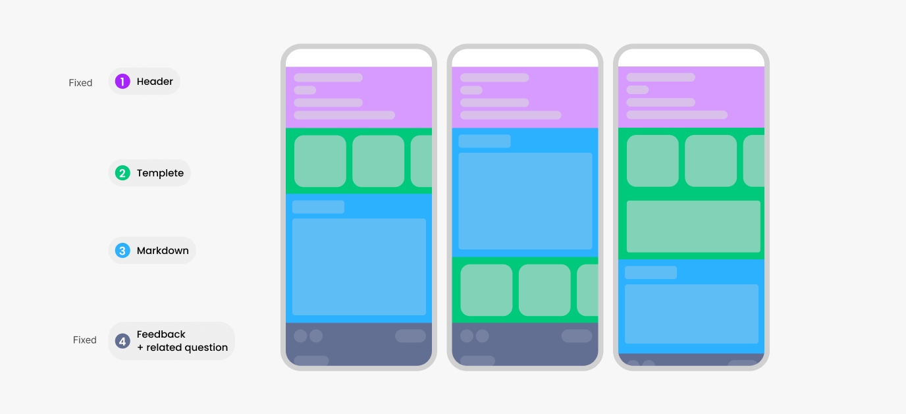
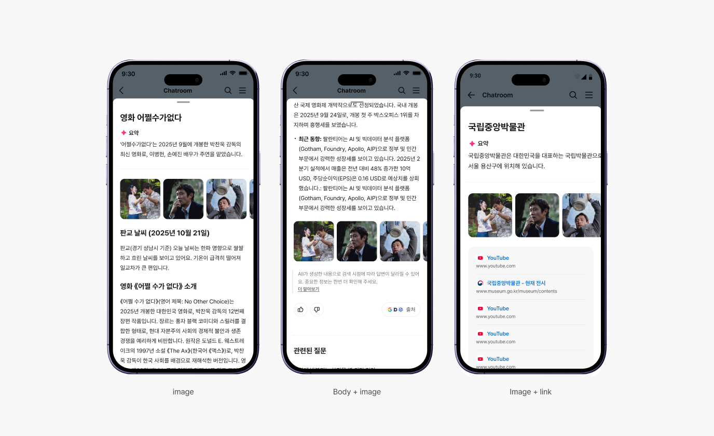
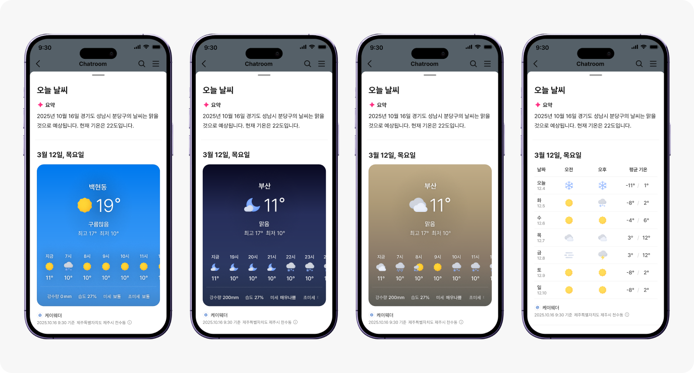
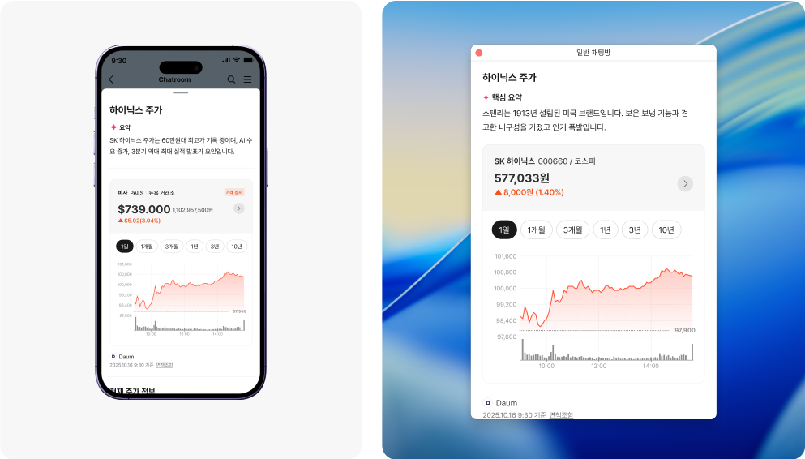
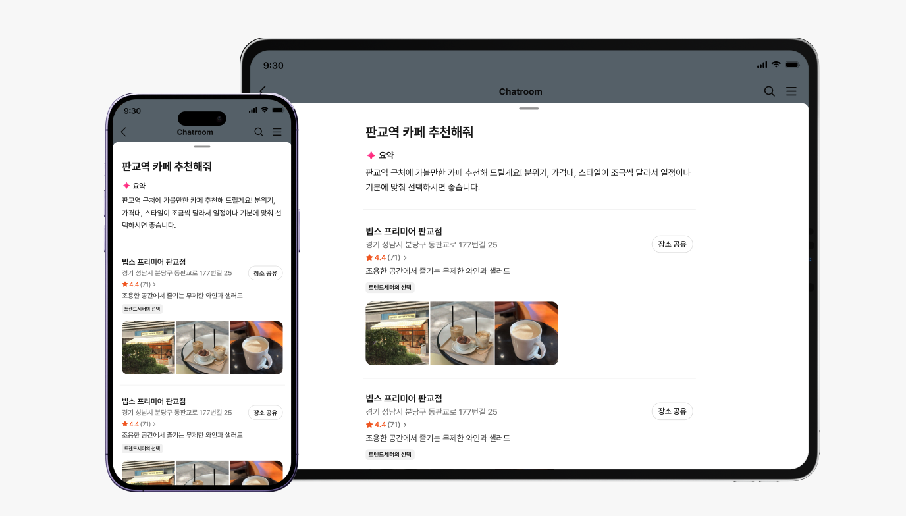

AI 시대의 검색,어떤 방식으로 정보를 구조화하고 문제를 풀어야 할까?
검색 결과 자체가 완성된 콘텐츠로 확장되는 경험, 기존 통합검색 서비스를 AI 검색으로 피봇하는 서비스 개편입니다. 모듈 시스템을 기반으로 정보 구조를 정의해, 기존 검색결과를 단일 페이지 콘텐츠로 제공할 경우 구조적 복잡성과 정보별 품질 편차가 발생한다는 인사이트를 기반으로, 검색 결과를 보다 구조적이고 안정적으로 제공할 수 있는 방향을 도출했습니다.


Module Caes
모듈 유형별 타입, 타입에 들어갈 수 있는 컴포넌트로 구성했습니다. 이는 자연스럽게 모바일/웹 환경에서 일관된 사용성·비주얼·정보 구조로 이어졌습니다.이를 통해 사용자는 콘텐츠가 달라져도 동일한 경험 안에서 추가 학습 없이 원하는 정보를 빠르게 찾을 수 있습니다.

Templete Weather

Templete Stock

Templete Place